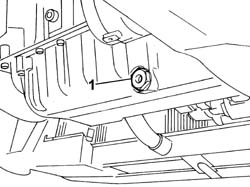
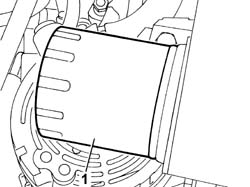

0010T12 ENGINE OIL AND FILTER - REPLACE
- Path
- Procedures > 00 MAINTENANCE > 0010 NEW VEHICLES AND MAINTENANCE > 0010T VEHICLE FLUIDS > 0010T12 ENGINE OIL AND FILTER - REPLACE
- Kind
- repair procedure (removal / refitting; the operation number is the code)
- Applies to
- all engines; all production periods
- Interactive page
- https://sloeber94.github.io/elrnDB-fUlss/en/#/179006815
Applies to: all engines; all production periods
 Refitting
Refitting
 Removing
Removing- Position the vehicle on the lift.
- Remove the filler cap.
- Release the dipstick.
- Raise the vehicle.
- Position a suitable container under the vehicle by the drain plug.
- Undo the drain plug in the crankcase sump and leave the oil to drain into the container.

Applies to: all engines; all production periods
- Undo the oil filter and remove it.

Applies to: all engines; all production periods
- Clean the drain plug and tighten it to the recommended torque.
- Lubricate the new oil filter seal with engine oil and tighten it fully by hand.
- Refill the lubrication circuit with the recommended oil.
Applies to: engines: 2.0 16v; all production periods
Description | Q.ty | Component | Type | Classification | |
|---|---|---|---|---|---|
. | SELENIA 20K | ENGINE LUBRICATION SYSTEM | Oil |
The following fluid is recommended for temperatures down to - 15°.
Description | Q.ty | Component | Type | Classification | |
|---|---|---|---|---|---|
. | SELENIA PERFORMER | ENGINE LUBRICATION SYSTEM | Oil |
Applies to: engines: 2.0 16V JTD; all production periods
 | Description | Qty. | Component | Type | Classification |
|---|---|---|---|---|---|
. | SELENIA TURBODIESEL | ENGINE LUBRICATION SYSTEM | Oil |
- For temperatures below - 15°, it is advisable to use the oil below
| Description | Qty. | Component | Type | Classification |
|---|---|---|---|---|---|
. | SELENIA WRDIESEL | ENGINE LUBRICATION SYSTEM | Oil |
Applies to: engines: 2.2 16V JTD; all production periods
| Description | Qty. | Component | Type | Classification |
|---|---|---|---|---|---|
. | SELENIA TURBODIESEL | ENGINE LUBRICATION SYSTEM | Oil |
- For temperatures below - 15°, it is advisable to use the oil below
| Description | Qty. | Component | Type | Classification |
|---|---|---|---|---|---|
. | SELENIA WRDIESEL | ENGINE LUBRICATION SYSTEM | Oil |
Applies to: all engines; all production periods
See
Op. 0010T11 ENGINE OIL - CHECK LEVEL AND TOP UP, IF NECESSARY
Check that the oil level is correct using the dipstick.
Fit the filler cap.
Start the engine and let it idle for about two minutes; switch off the engine and wait for a few minutes.
Check that the oil level is correct once again.
See
Op. 0010T11 ENGINE OIL - CHECK LEVEL AND TOP UP, IF NECESSARY
See
Op. 7055B54 UNDER ENGINE PROTECTION/GUARD - R.R.
Remove the vehicle from the lift.